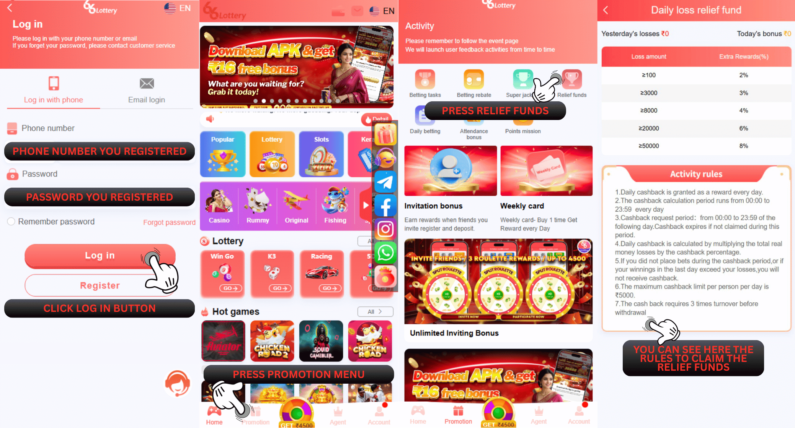
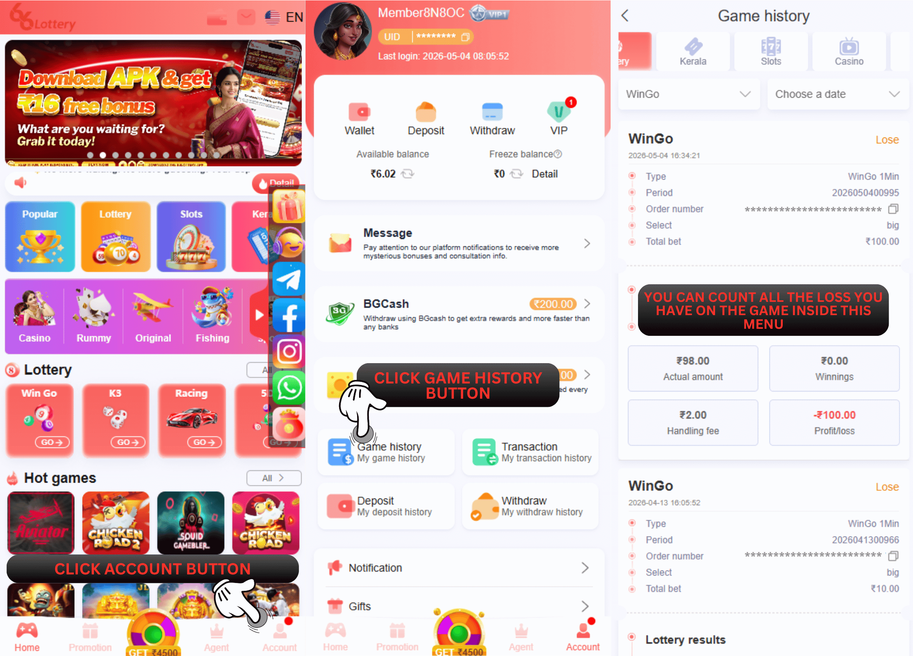

66 Lottery हानि बोनस
66 Lottery में हानि बोनस का दावा कैसे करें
66 Lottery लॉस बोनस" नाम का एक रिवॉर्ड देती है। इस बोनस को क्लेम करने के लिए, मेंबर्स को कम से कम 100 रुपये जमा करने होंगे और रोज़ाना 100 रुपये से ज़्यादा गेमिंग लॉस उठाना होगा। सभी गेम एलिजिबल हैं। हर मेंबर दिन में सिर्फ़ एक बार यह बोनस क्लेम कर सकता है, जिसमें कम से कम टर्नओवर बोनस अमाउंट का तीन गुना होना चाहिए। यह बोनस सिर्फ़ अगले दिन क्लेम करने के लिए अवेलेबल है और उस तारीख के बाद एक्सपायर हो जाएगा। आप नीचे दी गई इमेज में दिखाए गए तरीके से बोनस क्लेम कर सकते हैं। या फिर, आप अपना बोनस क्लेम करने के लिए एक्टिविटी पेज पर जाने के लिए इस लिंक पर क्लिक कर सकते हैं: https://www.66lottery.vip/
अनुस्मारक: बचाव बोनस के लिए प्रति दिन केवल 1x का दावा किया जा सकता है, यदि आप पहले ही दावा कर चुके हैं, तो कृपया कल फिर से जमा करें
| Loss amount | Extra Rewards(%) |
|---|---|
| ≥100 | 2% |
| ≥3000 | 3% |
| ≥8000 | 4% |
| ≥20000 | 6% |
| ≥50000 | 8% |
1. आप "प्रमोशन" एक्टिविटी पेज पर "रिलीफ फंड्स" पर क्लिक करके अपने नुकसान के मुआवजे का दावा कर सकते हैं।
2. न्यूनतम जमा राशि ₹100 या अधिक होनी चाहिए
3. कैशबैक एप्लीकेशन का समय रोज़ाना 00:00 से अगले दिन 23:59 तक है। इस समय के अंदर जमा नहीं किए गए कैशबैक एप्लीकेशन ज़ब्त कर लिए जाएँगे।
4. हर व्यक्ति के लिए मैक्सिमम डेली कैशबैक लिमिट 5000 रुपये है।
5. यह बोनस तब मान्य होता है जब आप 66 Lottery पर सभी गेम खेलते हैं
6. बोनस का दावा प्रति दिन केवल 1 बार किया जा सकता है
उदाहरण के लिए, यदि आपके पास जीतने वाली राशि ₹500 और हारने वाली राशि ₹12,000 के साथ कुल दांव ₹12,500 है, तो इसका मतलब है कि आपकी हानि केवल ₹12,000 है।

Q: मुझे कितना बोनस मिलेगा?
A: आपको अपनी कुल हानि राशि का 2~8% मिलेगा।
उदाहरण के लिए, विंगो गेम में आपका कुल नुकसान ₹10,000 है और आपको बोनस इनाम के रूप में ₹400 मिलेंगे और आपको मिलने वाली अधिकतम बोनस राशि ₹5,000 है, जिसका मतलब है कि यदि आप ₹62,500 से अधिक का नुकसान करते हैं तो आप केवल ₹ प्राप्त कर सकते हैं। इनाम के तौर पर 5,000 का बोनस
Q: मैं कैसे जान सकता हूं कि लागू किया गया बचाव बोनस पहले ही प्राप्त हो चुका है या नहीं?
A: उत्तर: आप "अकाउंट" में "ट्रांज़ैक्शन" पर क्लिक करके अपना बोनस डिस्ट्रीब्यूशन स्टेटस चेक कर सकते हैं। कृपया इन स्टेप्स को फ़ॉलो करें:
A: आपको अपनी कुल हानि राशि का 2~8% मिलेगा।
उदाहरण के लिए, विंगो गेम में आपका कुल नुकसान ₹10,000 है और आपको बोनस इनाम के रूप में ₹400 मिलेंगे और आपको मिलने वाली अधिकतम बोनस राशि ₹5,000 है, जिसका मतलब है कि यदि आप ₹62,500 से अधिक का नुकसान करते हैं तो आप केवल ₹ प्राप्त कर सकते हैं। इनाम के तौर पर 5,000 का बोनस
Q: मैं कैसे जान सकता हूं कि लागू किया गया बचाव बोनस पहले ही प्राप्त हो चुका है या नहीं?
A: उत्तर: आप "अकाउंट" में "ट्रांज़ैक्शन" पर क्लिक करके अपना बोनस डिस्ट्रीब्यूशन स्टेटस चेक कर सकते हैं। कृपया इन स्टेप्स को फ़ॉलो करें:
1. इस लिंक पर जाएं https://www.66lottery.vip/
2. अपने 66 Lottery अकाउंट ID में लॉग इन करें
3. “खाता” पर क्लिक करें
4. “लेनदेन” पर क्लिक करें
5. खोजने के लिए क्लिक करें
2. अपने 66 Lottery अकाउंट ID में लॉग इन करें
3. “खाता” पर क्लिक करें
4. “लेनदेन” पर क्लिक करें
5. खोजने के लिए क्लिक करें

Q: क्या बचाव बोनस लागू करते समय कोई अस्वीकृति होती है, क्या मुझे जानना आवश्यक है?
A: कुछ अस्वीकृतियां हैं जिन्हें आपको जानना आवश्यक है और हम आपको यह समझाएंगे
1. आपका टोटल डिपॉज़िट अमाउंट अभी तक 100 की मिनिमम ज़रूरत तक नहीं पहुँचा है, या आपके अकाउंट ID को कल 100 रुपये से कम का नुकसान हुआ है। कृपया पक्का करें कि आप अपना बोनस क्लेम करने के लिए अप्लाई करते समय सभी ज़रूरतें पूरी करते हैं, और नुकसान वाले दिन या तीसरे दिन दोबारा अप्लाई न करें।
2. कृपया ध्यान दें कि हर मेंबर ID दिन में सिर्फ़ एक बार क्लेम कर सकता है।
3. "आपने आज अपना रिवॉर्ड पहले ही क्लेम कर लिया है, कृपया कल फिर कोशिश करें।" यह रिजेक्शन बताता है कि आपने अपना रिवॉर्ड पहले ही क्लेम कर लिया है; कृपया अपना रेस्क्यू रिवॉर्ड क्लेम करने के लिए कल फिर कोशिश करें।
Q: मुझे खेद है कि यदि मैं बचाव बोनस ठीक 23:59 बजे लागू कर रहा हूं तो क्या बचाव बोनस अभी भी प्राप्त हो सकता है?
A: हाँ, बचाव बोनस के लिए आप अभी भी इसे प्राप्त कर सकते हैं, लेकिन यदि आप इसे 23:59 बजे के बाद लागू करते हैं या पहले से ही दिन बदल रहे हैं तो आपके द्वारा लागू किया गया बोनस पहले से ही अमान्य माना जाता है, आप बचाव बोनस का दावा करने के लिए नियम और शर्तों की भी जांच कर सकते हैं।
A: कुछ अस्वीकृतियां हैं जिन्हें आपको जानना आवश्यक है और हम आपको यह समझाएंगे
1. आपका टोटल डिपॉज़िट अमाउंट अभी तक 100 की मिनिमम ज़रूरत तक नहीं पहुँचा है, या आपके अकाउंट ID को कल 100 रुपये से कम का नुकसान हुआ है। कृपया पक्का करें कि आप अपना बोनस क्लेम करने के लिए अप्लाई करते समय सभी ज़रूरतें पूरी करते हैं, और नुकसान वाले दिन या तीसरे दिन दोबारा अप्लाई न करें।
2. कृपया ध्यान दें कि हर मेंबर ID दिन में सिर्फ़ एक बार क्लेम कर सकता है।
3. "आपने आज अपना रिवॉर्ड पहले ही क्लेम कर लिया है, कृपया कल फिर कोशिश करें।" यह रिजेक्शन बताता है कि आपने अपना रिवॉर्ड पहले ही क्लेम कर लिया है; कृपया अपना रेस्क्यू रिवॉर्ड क्लेम करने के लिए कल फिर कोशिश करें।
Q: मुझे खेद है कि यदि मैं बचाव बोनस ठीक 23:59 बजे लागू कर रहा हूं तो क्या बचाव बोनस अभी भी प्राप्त हो सकता है?
A: हाँ, बचाव बोनस के लिए आप अभी भी इसे प्राप्त कर सकते हैं, लेकिन यदि आप इसे 23:59 बजे के बाद लागू करते हैं या पहले से ही दिन बदल रहे हैं तो आपके द्वारा लागू किया गया बोनस पहले से ही अमान्य माना जाता है, आप बचाव बोनस का दावा करने के लिए नियम और शर्तों की भी जांच कर सकते हैं।